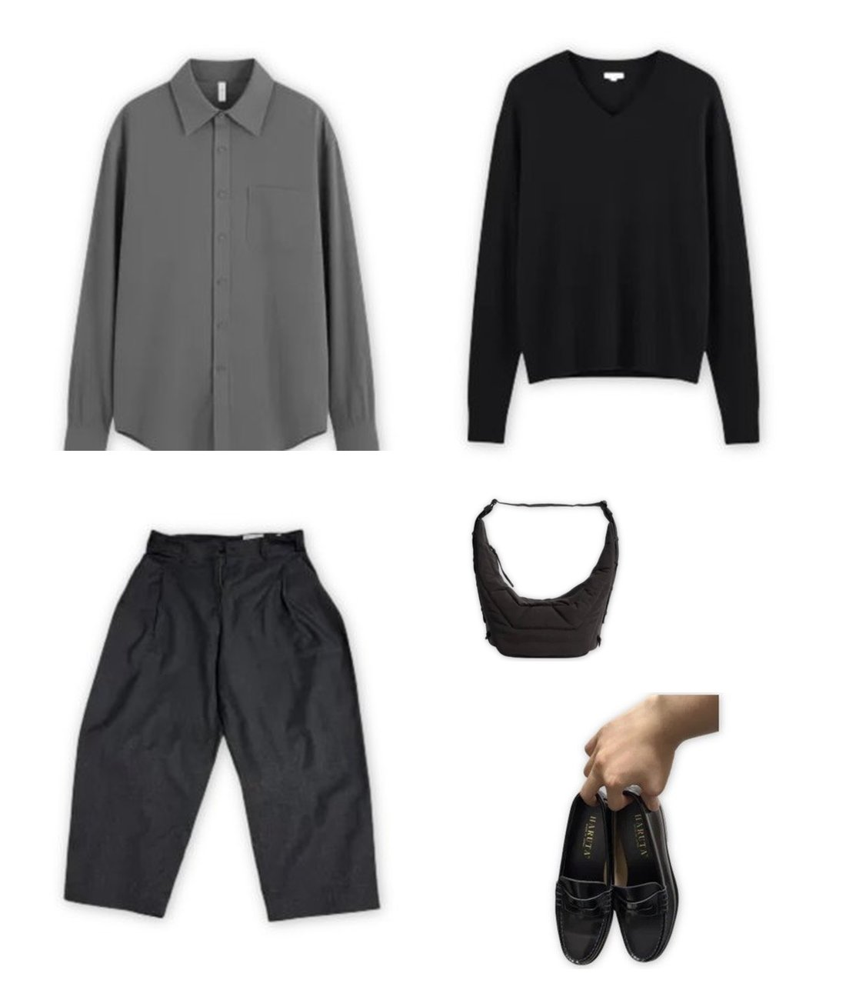
트렌드 코디
니트 레이어링 (포엣코어)
그레이 셔츠 위에 블랙 브이넥 니트를 겹쳐 칼라만 보이게. 차콜 투턱 슬랙스와 페니 로퍼로 근무일에 바로 입을 수 있어요.
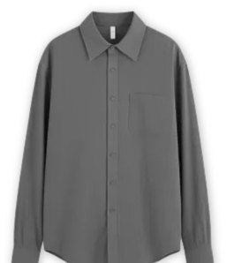
셔츠노이어 그레이 셔츠 니트artifact 블랙 브이넥 니트
니트artifact 블랙 브이넥 니트 정장바지어나더 오피스 차콜 투턱 정장바지
정장바지어나더 오피스 차콜 투턱 정장바지 로퍼HARUTA 블랙 페니 로퍼
로퍼HARUTA 블랙 페니 로퍼 숄더백르메르 블랙 호보 숄더백
숄더백르메르 블랙 호보 숄더백
옷장의 75%가 무채색이고, 그중 블랙이 약 3분의 1이에요. 쿠어, 노이어, 블랭크룸, siiido, 어나더 오피스, SONGZIO 같은 국내 컨템포러리 브랜드의 투턱·와이드·벌룬 하의와 오버핏 재킷이 중심이라, 한마디로 '블랙·차콜 톤온톤의 여유 있는 실루엣'이에요.
투턱 슬랙스, 블레이저 5벌, 울 코트 5벌, 로퍼·더비. 하객·근무·데이트를 모두 소화하는 축이에요.
나일론·트랙 재킷 15벌 안팎, 트랙팬츠, 러닝화 5켤레. 편하지만 지금 취향(모던 무채색)과는 결이 갈라지는 쪽이에요.
폴로 랄프 로렌 해링턴·니트 집업, 체크 셔츠들. 색과 패턴이 섞여 무채색 코디에 넣기 어려운 편이에요.
체형, 키, 피부 톤 정보 없이 옷장과 말씀하신 취향(모던, 무채색, 포인트 컬러 하나)만 보고 판단했어요.
지금처럼 블랙·차콜·그레이를 바탕으로 하되, 한 코디 안에 울·니트·레더·스웨이드처럼 서로 다른 소재를 2가지 이상 섞으세요. 르메르, 아워레가시, COS, 쿠어가 이 방향의 교과서예요.
와이드 하의는 강점이니 유지하고, 상의는 어깨에 맞는 니트·셔츠·블레이저로 정돈하세요. 런웨이가 다시 슬림해지는 흐름이라 스트레이트 바지 한두 벌을 더하면 균형이 맞아요.
올해 FW에 차콜과 함께 초콜릿 브라운이 떠올랐어요. 무채색 옷장에 넣기 가장 쉬운 색이고, 이미 브라운 무스탕·스웨이드 신발이 있어서 시작하기 좋아요.
셔츠 위 니트 레이어링이나 모크넥 니트로 단정하면서 편하게. 스포티한 나일론 재킷 대신 울 셔츠 재킷·가디건을 걸치면 같은 편안함에 격이 올라가요.
블레이저나 레더 블루종에 블랙·차콜 데님을 매치하는 '반쯤 차려입은' 조합이 이번 시즌 큰 흐름이에요.
몇 시즌 이어진 오버사이즈에서 벗어나 슬림한 실루엣과 클래식 아이템이 돌아왔어요. 프라다는 극단적으로 슬림한 실루엣으로 화제가 됐어요.
내 옷장으로: SOLID HOMME 블랙 테이퍼드 정장바지, IN SILENCE 차콜 싱글 블레이저처럼 군더더기 없는 핏부터 꺼내 입으세요.
블랙 비중이 줄고 차콜과 초콜릿 브라운이 늘었어요. 르메르 FW26도 차콜·초콜릿·카키를 기본 팔레트로 썼어요.
내 옷장으로: 블랙 대신 차콜을 메인으로, 포인트 하나는 브라운으로 바꿔보세요. 아래 '브라운 포인트' 코디 참고.
생로랑, 에르메스 등에서 레더를 전신에 쓴 룩이 많았고, 가죽 재킷에서 가죽 코트로 무게가 옮겨갔어요.
내 옷장으로: 레더 블루종 3벌이 이미 있어요. 블랙 모크넥 + 블랙 슬랙스 + 첼시 부츠로 톤을 이어 입으세요.
셔츠 위 니트·카디건, 청키 니트, 뿔테 안경 같은 '모던 아카데미아' 무드가 핀터레스트와 런웨이 모두에서 올라왔어요.
내 옷장으로: 셔츠 + 브이넥 니트 레이어링은 근무룩으로 바로 쓸 수 있어요.
핀터레스트에서 '빈티지 워크웨어 남자 코디' 검색이 크게 늘었고, 아워레가시 FW26도 워크 재킷·롱 코트 같은 실용 아이템을 다듬었어요.
내 옷장으로: 쿠어 차콜 워크 재킷 + 블랙 스트레이트 데님 + 데저트 부츠 조합.
재킷에 데님이나 캐주얼 팬츠를 섞는 스타일이 FW 남성복의 큰 흐름이에요.
내 옷장으로: 블레이저에 블랙 데님, 로퍼로 마무리.

그레이 셔츠 위에 블랙 브이넥 니트를 겹쳐 칼라만 보이게. 차콜 투턱 슬랙스와 페니 로퍼로 근무일에 바로 입을 수 있어요.

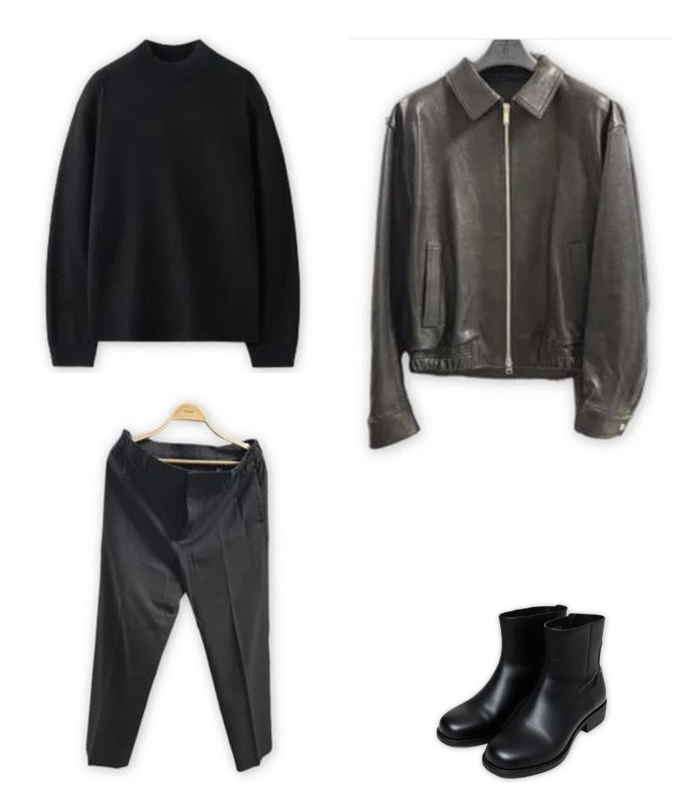
블랙 레더 블루종, 블랙 모크넥, 테이퍼드 슬랙스, 첼시 부츠. 같은 블랙이라도 레더·니트·울 질감이 달라 밋밋하지 않아요.
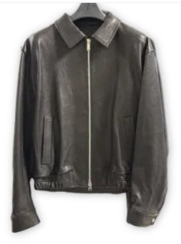
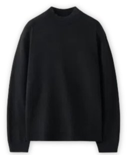


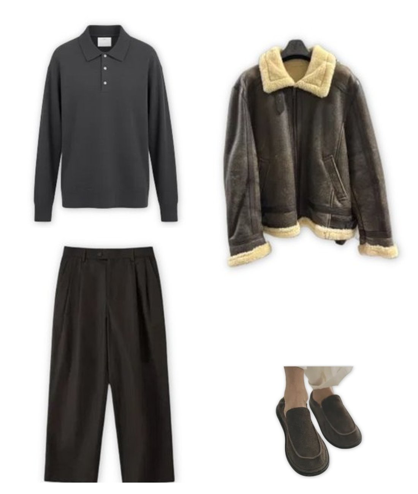
브라운 무스탕과 브라운 스웨이드 슬립온만 같은 브라운 계열로, 나머지는 차콜·블랙. 포인트 컬러를 하나로 지키면서 올해 색을 입는 방법이에요.


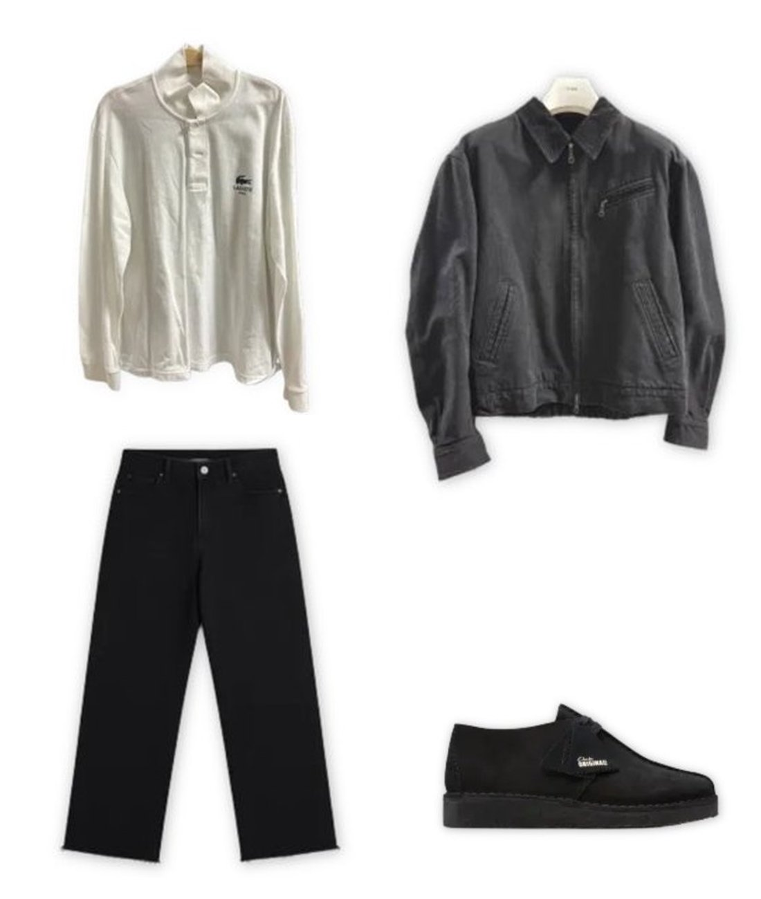
차콜 워크 재킷과 화이트 헨리넥, 블랙 스트레이트 데님, 블랙 스웨이드 데저트 부츠. 유틸리티 무드를 무채색으로 정리했어요.

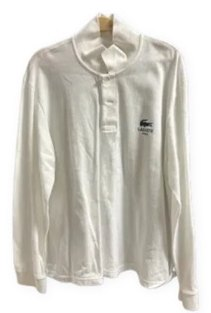
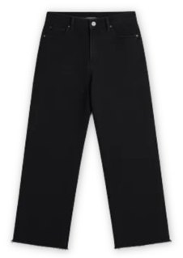

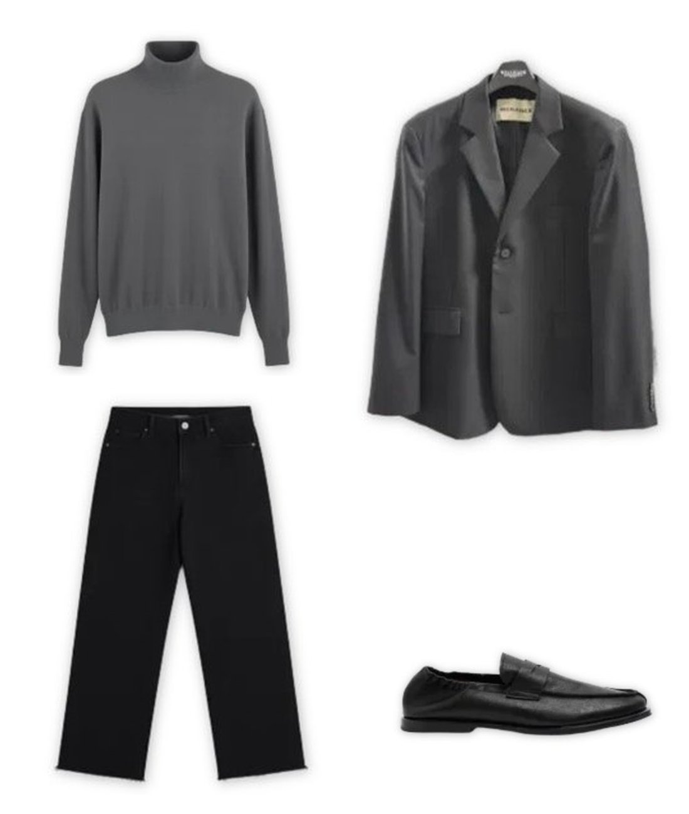
차콜 싱글 블레이저에 그레이 터틀넥, 블랙 데님과 로퍼. 반쯤 차려입은 주말 데이트룩이에요.
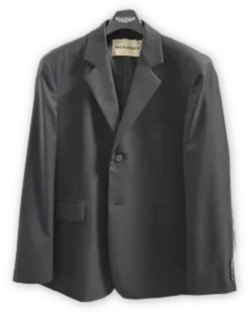
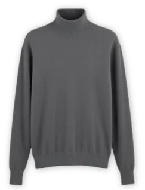

런웨이·핀터레스트 사진은 저작권 때문에 직접 싣지 않고 링크로 모았어요.
올해 색을 무채색 옷장에 넣는 가장 쉬운 방법이에요. 블랙·차콜 슬랙스와 모두 맞아요.
블랙 첼시는 이미 있어요. 브라운 스웨이드를 더하면 브라운 포인트 코디가 쉬워져요. 비 오는 날용이면 방수 가죽 모델을 고르세요.
지금 가방은 나일론 크로스백, 백팩, 호보백이에요. 코트·블레이저 차림에 맞는 각 잡힌 가죽 가방이 하나 있으면 좋아요.
코트 5벌과 모두 어울리고, 겨울 출퇴근 보온에 좋아요.
버리라는 뜻은 아니에요. 지금 취향과 잘 안 맞거나 겹치는 옷이라 코디 추천에서 잘 안 쓰이는 후보예요.
비슷한 블랙·그레이 나일론 재킷이 15벌 안팎이에요. 모양이 좋은 2~3벌만 남기세요(예: SYSTEM HOMME, SOLID HOMME).
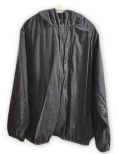
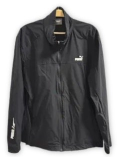
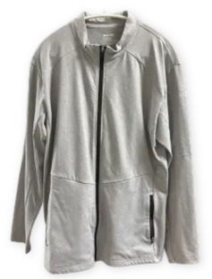
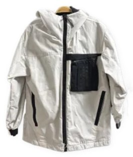
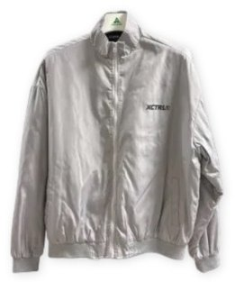
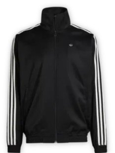
강한 색, 큰 로고, 벨벳 소재라 무채색 코디에 넣을 자리가 거의 없어요.
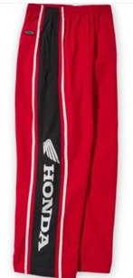
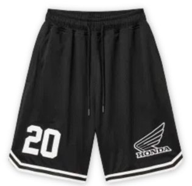

무채색 옷장에서 밝은 블루 데님은 1~2벌이면 충분해요. 가장 자주 입는 것만 남기세요.
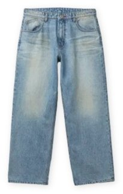
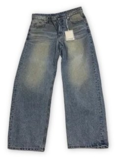


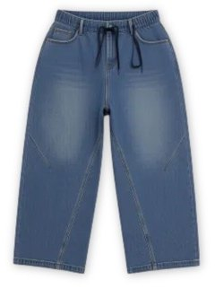
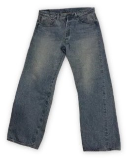
거의 같은 바지예요. 1벌이면 돼요.
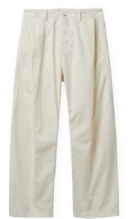

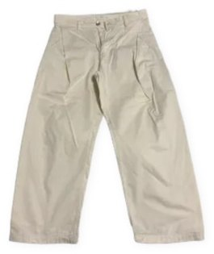
여러 색이 섞인 패턴이라 '포인트 컬러 하나' 규칙과 부딪혀요. 가장 차분한 1벌만 남기세요.
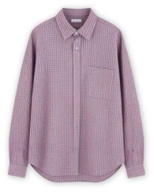
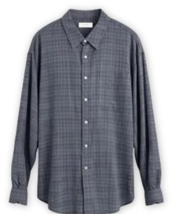
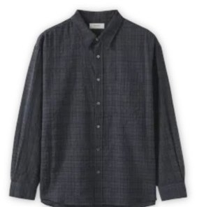
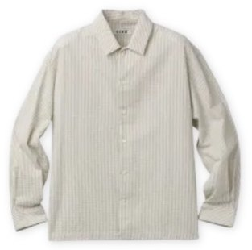
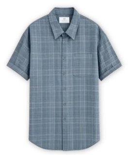
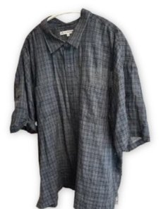
모던 미니멀 방향과 거리가 있어요. 운동·집에서만 입는다면 그대로 두셔도 돼요.
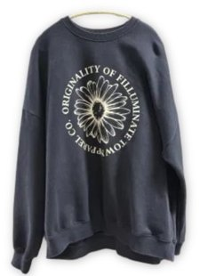
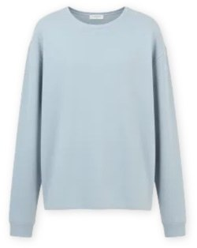
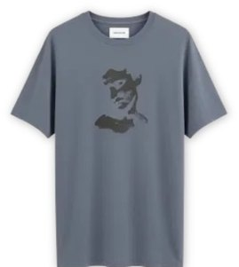
같은 모델이나 거의 같은 신발이 두 켤레씩 있어요.
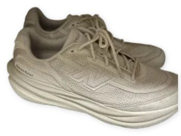

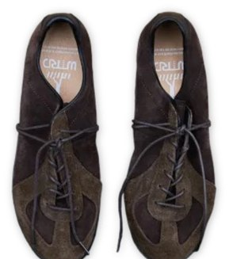
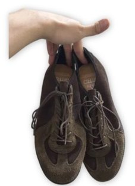